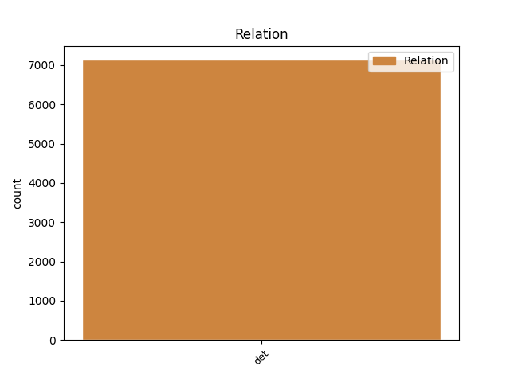
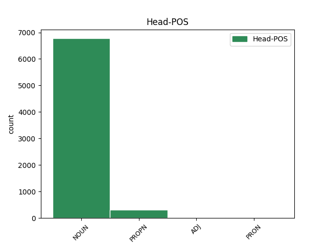
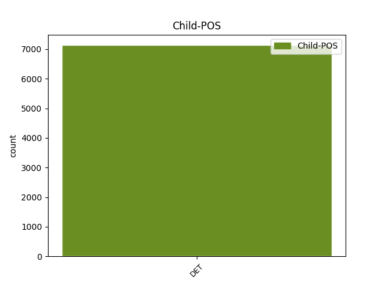

Distribution of features within this leaf



Agreement Rules sorted by frequency.
- When the dependent token is the determiner(det) of the head token,
1 - _ _ _ _ 0 _ _ _
2 dernier _ _ _ _ 0 _ _ _
3 résumé _ _ _ _ 0 _ _ _
4 : _ _ _ _ 0 _ _ _
5 l' _ _ _ _ 0 _ _ _
6 " _ _ _ _ 0 _ _ _
7 Affaire _ _ _ _ 0 _ _ _
8 de _ _ _ _ 0 _ _ _
9 les le DET _ Definite=Def|Number=Plur|PronType=Art 10 det _ _
10 piastres piastre NOUN _ Gender=Fem|Number=Plur 0 _ _ _
11 " _ _ _ _ 0 _ _ _
Disagree Examples:
1 Un _ _ _ _ 0 _ _ _
2 voyage _ _ _ _ 0 _ _ _
3 étonnant _ _ _ _ 0 _ _ _
4 où _ _ _ _ 0 _ _ _
5 photos _ _ _ _ 0 _ _ _
6 , _ _ _ _ 0 _ _ _
7 réalisations _ _ _ _ 0 _ _ _
8 , _ _ _ _ 0 _ _ _
9 vieux _ _ _ _ 0 _ _ _
10 outils _ _ _ _ 0 _ _ _
11 , _ _ _ _ 0 _ _ _
12 documents _ _ _ _ 0 _ _ _
13 anciens _ _ _ _ 0 _ _ _
14 , _ _ _ _ 0 _ _ _
15 permettront _ _ _ _ 0 _ _ _
16 de _ _ _ _ 0 _ _ _
17 mesurer _ _ _ _ 0 _ _ _
18 combien _ _ _ _ 0 _ _ _
19 ce _ _ _ _ 0 _ _ _
20 petit _ _ _ _ 0 _ _ _
21 bout _ _ _ _ 0 _ _ _
22 de _ _ _ _ 0 _ _ _
23 terre _ _ _ _ 0 _ _ _
24 de _ _ _ _ 0 _ _ _
25 France _ _ _ _ 0 _ _ _
26 , _ _ _ _ 0 _ _ _
27 situé _ _ _ _ 0 _ _ _
28 à _ _ _ _ 0 _ _ _
29 les le DET _ Definite=Def|Number=Plur|PronType=Art 30 det _ _
30 Marches Marches PROPN _ Gender=Masc|Number=Sing 0 _ _ _
31 de _ _ _ _ 0 _ _ _
32 l' _ _ _ _ 0 _ _ _
33 Est _ _ _ _ 0 _ _ _
34 , _ _ _ _ 0 _ _ _
35 lieu _ _ _ _ 0 _ _ _
36 de _ _ _ _ 0 _ _ _
37 passage _ _ _ _ 0 _ _ _
38 de _ _ _ _ 0 _ _ _
39 prédilection _ _ _ _ 0 _ _ _
40 de _ _ _ _ 0 _ _ _
41 les _ _ _ _ 0 _ _ _
42 invasions _ _ _ _ 0 _ _ _
43 , _ _ _ _ 0 _ _ _
44 fut _ _ _ _ 0 _ _ _
45 une _ _ _ _ 0 _ _ _
46 terre _ _ _ _ 0 _ _ _
47 de _ _ _ _ 0 _ _ _
48 labeur _ _ _ _ 0 _ _ _
49 , _ _ _ _ 0 _ _ _
50 et _ _ _ _ 0 _ _ _
51 combien _ _ _ _ 0 _ _ _
52 le _ _ _ _ 0 _ _ _
53 travail _ _ _ _ 0 _ _ _
54 de _ _ _ _ 0 _ _ _
55 ses _ _ _ _ 0 _ _ _
56 habitants _ _ _ _ 0 _ _ _
57 , _ _ _ _ 0 _ _ _
58 durs _ _ _ _ 0 _ _ _
59 à _ _ _ _ 0 _ _ _
60 la _ _ _ _ 0 _ _ _
61 tâche _ _ _ _ 0 _ _ _
62 , _ _ _ _ 0 _ _ _
63 doit _ _ _ _ 0 _ _ _
64 être _ _ _ _ 0 _ _ _
65 reconnu _ _ _ _ 0 _ _ _
66 et _ _ _ _ 0 _ _ _
67 mis _ _ _ _ 0 _ _ _
68 en _ _ _ _ 0 _ _ _
69 valeur _ _ _ _ 0 _ _ _
70 . _ _ _ _ 0 _ _ _
1 Pour _ _ _ _ 0 _ _ _
2 finir _ _ _ _ 0 _ _ _
3 , _ _ _ _ 0 _ _ _
4 le _ _ _ _ 0 _ _ _
5 mot _ _ _ _ 0 _ _ _
6 de _ _ _ _ 0 _ _ _
7 le _ _ _ _ 0 _ _ _
8 président _ _ _ _ 0 _ _ _
9 , _ _ _ _ 0 _ _ _
10 Luc _ _ _ _ 0 _ _ _
11 Stéfann _ _ _ _ 0 _ _ _
12 , _ _ _ _ 0 _ _ _
13 qui _ _ _ _ 0 _ _ _
14 rappelle _ _ _ _ 0 _ _ _
15 la _ _ _ _ 0 _ _ _
16 vocation _ _ _ _ 0 _ _ _
17 de _ _ _ _ 0 _ _ _
18 les _ _ _ _ 0 _ _ _
19 bénévoles _ _ _ _ 0 _ _ _
20 de _ _ _ _ 0 _ _ _
21 l' _ _ _ _ 0 _ _ _
22 association _ _ _ _ 0 _ _ _
23 : _ _ _ _ 0 _ _ _
24 être _ _ _ _ 0 _ _ _
25 un _ _ _ _ 0 _ _ _
26 soutien _ _ _ _ 0 _ _ _
27 pour _ _ _ _ 0 _ _ _
28 la _ _ _ _ 0 _ _ _
29 paroisse _ _ _ _ 0 _ _ _
30 , _ _ _ _ 0 _ _ _
31 apporter _ _ _ _ 0 _ _ _
32 une _ _ _ _ 0 _ _ _
33 petite _ _ _ _ 0 _ _ _
34 contribution _ _ _ _ 0 _ _ _
35 financière _ _ _ _ 0 _ _ _
36 à _ _ _ _ 0 _ _ _
37 les _ _ _ _ 0 _ _ _
38 travaux _ _ _ _ 0 _ _ _
39 grâce _ _ _ _ 0 _ _ _
40 à _ _ _ _ 0 _ _ _
41 les le DET _ Definite=Def|Gender=Masc|Number=Sing|PronType=Art 42 det _ _
42 manifestations manifestation NOUN _ Gender=Fem|Number=Plur 0 _ _ _
43 et _ _ _ _ 0 _ _ _
44 à _ _ _ _ 0 _ _ _
45 les _ _ _ _ 0 _ _ _
46 dons _ _ _ _ 0 _ _ _
47 , _ _ _ _ 0 _ _ _
48 accomplir _ _ _ _ 0 _ _ _
49 de _ _ _ _ 0 _ _ _
50 multiples _ _ _ _ 0 _ _ _
51 tâches _ _ _ _ 0 _ _ _
52 et _ _ _ _ 0 _ _ _
53 démarches _ _ _ _ 0 _ _ _
54 touchant _ _ _ _ 0 _ _ _
55 à _ _ _ _ 0 _ _ _
56 les _ _ _ _ 0 _ _ _
57 bâtiment _ _ _ _ 0 _ _ _
58 paroissiaux _ _ _ _ 0 _ _ _
59 , _ _ _ _ 0 _ _ _
60 contribuer _ _ _ _ 0 _ _ _
61 à _ _ _ _ 0 _ _ _
62 la _ _ _ _ 0 _ _ _
63 convivialité _ _ _ _ 0 _ _ _
64 entre _ _ _ _ 0 _ _ _
65 les _ _ _ _ 0 _ _ _
66 paroissiens _ _ _ _ 0 _ _ _
67 . _ _ _ _ 0 _ _ _
1 Pour _ _ _ _ 0 _ _ _
2 finir _ _ _ _ 0 _ _ _
3 , _ _ _ _ 0 _ _ _
4 le _ _ _ _ 0 _ _ _
5 mot _ _ _ _ 0 _ _ _
6 de _ _ _ _ 0 _ _ _
7 le _ _ _ _ 0 _ _ _
8 président _ _ _ _ 0 _ _ _
9 , _ _ _ _ 0 _ _ _
10 Luc _ _ _ _ 0 _ _ _
11 Stéfann _ _ _ _ 0 _ _ _
12 , _ _ _ _ 0 _ _ _
13 qui _ _ _ _ 0 _ _ _
14 rappelle _ _ _ _ 0 _ _ _
15 la _ _ _ _ 0 _ _ _
16 vocation _ _ _ _ 0 _ _ _
17 de _ _ _ _ 0 _ _ _
18 les _ _ _ _ 0 _ _ _
19 bénévoles _ _ _ _ 0 _ _ _
20 de _ _ _ _ 0 _ _ _
21 l' _ _ _ _ 0 _ _ _
22 association _ _ _ _ 0 _ _ _
23 : _ _ _ _ 0 _ _ _
24 être _ _ _ _ 0 _ _ _
25 un _ _ _ _ 0 _ _ _
26 soutien _ _ _ _ 0 _ _ _
27 pour _ _ _ _ 0 _ _ _
28 la _ _ _ _ 0 _ _ _
29 paroisse _ _ _ _ 0 _ _ _
30 , _ _ _ _ 0 _ _ _
31 apporter _ _ _ _ 0 _ _ _
32 une _ _ _ _ 0 _ _ _
33 petite _ _ _ _ 0 _ _ _
34 contribution _ _ _ _ 0 _ _ _
35 financière _ _ _ _ 0 _ _ _
36 à _ _ _ _ 0 _ _ _
37 les _ _ _ _ 0 _ _ _
38 travaux _ _ _ _ 0 _ _ _
39 grâce _ _ _ _ 0 _ _ _
40 à _ _ _ _ 0 _ _ _
41 les _ _ _ _ 0 _ _ _
42 manifestations _ _ _ _ 0 _ _ _
43 et _ _ _ _ 0 _ _ _
44 à _ _ _ _ 0 _ _ _
45 les _ _ _ _ 0 _ _ _
46 dons _ _ _ _ 0 _ _ _
47 , _ _ _ _ 0 _ _ _
48 accomplir _ _ _ _ 0 _ _ _
49 de _ _ _ _ 0 _ _ _
50 multiples _ _ _ _ 0 _ _ _
51 tâches _ _ _ _ 0 _ _ _
52 et _ _ _ _ 0 _ _ _
53 démarches _ _ _ _ 0 _ _ _
54 touchant _ _ _ _ 0 _ _ _
55 à _ _ _ _ 0 _ _ _
56 les le DET _ Definite=Def|Number=Plur|PronType=Art 57 det _ _
57 bâtiment bâtiment NOUN _ Gender=Masc|Number=Sing 0 _ _ _
58 paroissiaux _ _ _ _ 0 _ _ _
59 , _ _ _ _ 0 _ _ _
60 contribuer _ _ _ _ 0 _ _ _
61 à _ _ _ _ 0 _ _ _
62 la _ _ _ _ 0 _ _ _
63 convivialité _ _ _ _ 0 _ _ _
64 entre _ _ _ _ 0 _ _ _
65 les _ _ _ _ 0 _ _ _
66 paroissiens _ _ _ _ 0 _ _ _
67 . _ _ _ _ 0 _ _ _
1 Si _ _ _ _ 0 _ _ _
2 ( _ _ _ _ 0 _ _ _
3 actuellement _ _ _ _ 0 _ _ _
4 ) _ _ _ _ 0 _ _ _
5 on _ _ _ _ 0 _ _ _
6 a _ _ _ _ 0 _ _ _
7 une _ _ _ _ 0 _ _ _
8 idée _ _ _ _ 0 _ _ _
9 de _ _ _ _ 0 _ _ _
10 le _ _ _ _ 0 _ _ _
11 seuil _ _ _ _ 0 _ _ _
12 en-dessous _ _ _ _ 0 _ _ _
13 de _ _ _ _ 0 _ _ _
14 lequel _ _ _ _ 0 _ _ _
15 il _ _ _ _ 0 _ _ _
16 ne _ _ _ _ 0 _ _ _
17 sera _ _ _ _ 0 _ _ _
18 pas _ _ _ _ 0 _ _ _
19 possible _ _ _ _ 0 _ _ _
20 de _ _ _ _ 0 _ _ _
21 descendre _ _ _ _ 0 _ _ _
22 , _ _ _ _ 0 _ _ _
23 certaines certain DET _ Gender=Fem|Number=Plur 24 det _ _
24 donnée donnée NOUN _ Gender=Fem|Number=Sing 0 _ _ _
25 présentées _ _ _ _ 0 _ _ _
26 par _ _ _ _ 0 _ _ _
27 l' _ _ _ _ 0 _ _ _
28 architecte _ _ _ _ 0 _ _ _
29 n' _ _ _ _ 0 _ _ _
30 ont _ _ _ _ 0 _ _ _
31 pas _ _ _ _ 0 _ _ _
32 été _ _ _ _ 0 _ _ _
33 suffisamment _ _ _ _ 0 _ _ _
34 précises _ _ _ _ 0 _ _ _
35 pour _ _ _ _ 0 _ _ _
36 que _ _ _ _ 0 _ _ _
37 la _ _ _ _ 0 _ _ _
38 commission _ _ _ _ 0 _ _ _
39 prenne _ _ _ _ 0 _ _ _
40 des _ _ _ _ 0 _ _ _
41 décisions _ _ _ _ 0 _ _ _
42 . _ _ _ _ 0 _ _ _
1 Quelques _ _ _ _ 0 _ _ _
2 questions _ _ _ _ 0 _ _ _
3 diverses _ _ _ _ 0 _ _ _
4 comme _ _ _ _ 0 _ _ _
5 l' _ _ _ _ 0 _ _ _
6 indemnité _ _ _ _ 0 _ _ _
7 de _ _ _ _ 0 _ _ _
8 le _ _ _ _ 0 _ _ _
9 trésorier _ _ _ _ 0 _ _ _
10 principal _ _ _ _ 0 _ _ _
11 de _ _ _ _ 0 _ _ _
12 Toul _ _ _ _ 0 _ _ _
13 , _ _ _ _ 0 _ _ _
14 ou _ _ _ _ 0 _ _ _
15 l' _ _ _ _ 0 _ _ _
16 assurance _ _ _ _ 0 _ _ _
17 de _ _ _ _ 0 _ _ _
18 les le DET _ Definite=Def|Number=Plur|PronType=Art 19 det _ _
19 personnel personnel NOUN _ Gender=Masc|Number=Sing 0 _ _ _
20 communaux _ _ _ _ 0 _ _ _
21 ont _ _ _ _ 0 _ _ _
22 clos _ _ _ _ 0 _ _ _
23 cette _ _ _ _ 0 _ _ _
24 soirée _ _ _ _ 0 _ _ _
25 de _ _ _ _ 0 _ _ _
26 travail _ _ _ _ 0 _ _ _
27 . _ _ _ _ 0 _ _ _